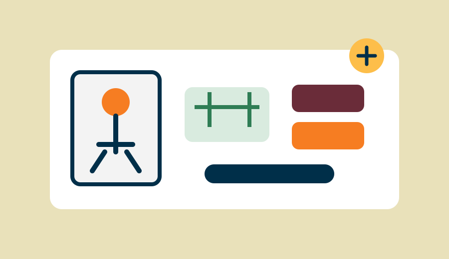

Pontos de higiene e cuidado
Banho, banheiro, lavatórios e itens básicos de higiene.
Projeto social
O Ponto Digno propõe uma rede de espaços de higiene e cuidado para pessoas em situação de rua, com serviços básicos e orientação para acesso a outras redes de apoio.

Nossa proposta
O projeto busca ampliar o acesso à higiene básica e criar uma ponte para outras redes de apoio. A implantação seria gradual, conforme a necessidade das regiões e a disponibilidade de recursos e parcerias.
Frentes de atuação
Banho, banheiro, lavatórios e itens básicos de higiene.
Arrecadação, triagem e distribuição de roupas limpas.
Arrecadação e disponibilização de produtos básicos.
Informações e encaminhamentos para assistência social, saúde e documentação.